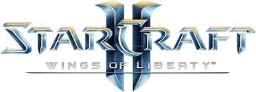

星际争霸2 电子竞技的鼻祖
星际争霸系列（英语：StarCraft，香港和台湾译作“星海争霸”）是由暴雪娱乐有限公司（Blizzard Entertainment）制作发行的一系列战争题材科幻游戏。游戏系列主要由克里斯·梅森（Chris Metzen）
与James Phinney设计开发。游戏的剧情发生在26世纪初期的克普鲁星区——位于遥远的银河系中心。剧情讲述了三个种族之间的斗争，包括来自地球的人类、神秘而强大的星灵以及异形异虫。1998年即时战略
游戏《星际争霸》发行，随后便产生了一大批衍生产品，包括8部相关题材的小说、1款桌上游戏以及其他授权商品比如模型玩具等。
暴雪娱乐于1995年开始着手设计《星际争霸》系列游戏。这款游戏首先在1996年的电子娱乐大展（E3 Expo）上进行展示，并最初采用了《魔兽争霸II》的游戏引擎。《星际争霸》同样使暴雪娱乐建立了视频
制作部门，最初用以在《星际争霸》的故事主线中插入一系列过场电影短片。
1998年《星际争霸》发行之后，大部分《星际争霸》开发人员继续进行了其官方资料片《母巢之战》（Brood War）的开发。2001年，《星际争霸：幽灵》开始由Nihilistic Software领导开发。不同于先前
的即时战略系列游戏，这是一部动作冒险游戏。然而在2004年，《星际争霸：幽灵》宣布被无限期推迟。《星际争霸II》于2010年7月27日发行。《星际争霸II》资料片《星际争霸II：虫群之心》则于2013年3
月12日发行。《星际争霸II》最后一部资料片《星际争霸II：虚空之遗》在2015年11月10日发行。和《星际争霸II：自由之翼》以及《星际争霸II：虫群之心》不同的是，这次虚空之遗在中国大陆的发售与全
球战网服务器的时间同步。于2017年8月14日《星际争霸》及《星际争霸：母巢之战》资料片高清重制版正式发售。[1][2]
原版《星际争霸》及其资料片发行初期即受到大量好评，仅于1998年即售出了150万套，[3]，是当年销量最好的PC游戏；而十年内总销售量则超过950万套。[4] 部分评论媒体将其视为史上最为杰出[5] 和重
[6] 的游戏之一，并赞扬它对于即时战略游戏发展的贡献。这一系列的游戏吸引了全世界众多的玩家。特别是在韩国，职业选手及战队在电视上进行对抗，收视率很好。
2020年10月，暴雪宣布《星际争霸II》进入维护模式，终止开发新功能，只保留部分安全性与游戏平衡性的维护。[7]
